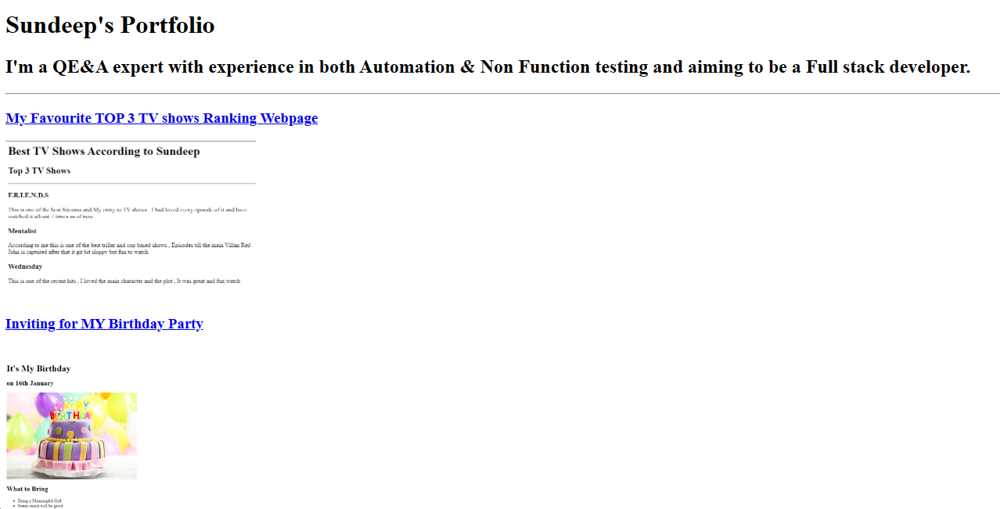

Sundeep Dommaraju

Current Role and Designation
Quality Engineering and Assurance Test Lead ( Functional , Automation & Non Functional)
Senior Associate - Cognizant
Email ID : dsundeep.eceb2015@gmail.com
Professional Summary
8+ years of professional experience as Quality Engineering & Assurance Associate (Functional , Automation & Non Functional - Performance Tester)
with a demonstrated history of working in the information technology and services industry,
successfully lead and executed 5 blue chip projects and 20+ enhancement projects.
Skilled in Non function Testing (API Testing , E2E Backend web Server Load Testing , POS Testing) ,
Function - API Testing ( Soap, Rest, MQ) , SQL ,Service Virtualization, Salesforce application,
Identity & Access Management (IAM)-Oracle Identity Manager(OAM , OAAM), SAP ECC and
Automation (API, Web UI , SAP , DB) using Python - Robot framework.
Immense Knowledge in Retail Banking & Financial services, Store management, Forecast and replenishment , Ecommerce domains.
Highly competitive and passionate about troubleshoot the functional and Non Functional issues and tuning to improve the quality of application.
Expertise in Functional and Non Functional Requirements gathering, Test planning, Test strategy, simulating real world scenarios & proficient in industry leading test and Management tools.
Have very good experience in leading with ≤10 members team in distributing the work load and representing the team in various meetings with clients.
Strong accounting professional with a Bachelor of Engineering - BE focused in Electronics and Communications Engineering from R M K College of Engineering and Technology.
Education Qualification
- Bachelor of Technology (B. Tech) in Electronics and Communications Engineering from R.M.K College of Engineering & Technology , Puduvoyal , Tamil Nadu , India. (2011 - 2015)
Work Experience
Client:
A leading Canadian food retailer encompassing franchise supermarkets, pharmacies as well as banking services.
Designation:
QE&A Test Analyst
Domain:
Retail-Store & Fulfillment Centre Management
Projects:
1-Blue chip project
Work Location:
INDIA
Duration of the Project:
December 2020 - November 2021
Model:
Agile(POD model)
STLC:
- System Integration Testing (SIT)
- Regression testing(RT)
- User Acceptance testing (UAT)
Technologies:
- API testing
- Online Retail sales
- Store Inventory Management
- SAP ECC
- Store Inventory – Forecast and Replenishment
- Oracle DB
- ESB
- Batch Jobs
- POS machine
Tools:
- Grafana K6 Load Testing Tool
- New Relic
- Soap UI
- Postman
- SQL Developer
- RFHUTIL
- Putty
- Winscp
- FileZilla
- Notepad++
- Jira
- github
- jenkins
Automation:
Robot Framework – PythonV-3.7(IDE Eclipse – RED Plugin)
Roles and Responsibilities
- Involved in all Requirements gathering and user stories sizing sessions to understand the Sprints in scope items.
- Created and presented detailed test strategy & test plan documents that provides clear guidelines on Scope for each phase , Automation / testing tools to be used , timeline for each phase , contingency plans etc.
- Acted as an offshore SME to support both Functional and Non Functional testing teams like Performance & Security and assisted them for on time completion of user stories.
- Assigning the tasks to the team, consolidating the DSR, WSR, resolving the issues on the scripts & doubts regarding the process to the team members, provided timely and accurate Testing metrics and made sure that team adheres testing commitments agreed as part of SOWs.
- For each sprint, created Test scenarios and reviewed the same with client System Analysts.
- Developed Automation scripts using Selenium, Suds, JSON, database etc. libraries in Python - Robot Framework to trigger and test APIs during different phases of testing.
- Responsible for testing E2E Online retail order fulfilment systems – Create Order via web UI, IOS App for Staging products in order in Store, Payment for the order via POS , Creating Forecast based on the sale , Replenishment logics based on the Forecast.
- Actively participated in the Sprint daily scrum calls - triaged the defects on call, suggested and discussed solutions for same with developers and other stake holders.
- Actively participated in Sprint retrospective meetings and effectively discussed the outcome of past sprint and steps that could improve the team’s performance
- Effectively documented Sprint performance, teams achievements during the sprint and presented the same to all stakeholders during sprint ceremonies call.
- Collaborated effectively with developers and System Analysts to effectively test the functionalities during all phases of the STLC to detect and correct Functional issues in the lifecycle.
- Created and deployed Automation Test suits for different phases of testing and scheduled the same in a Jenkins job with help of in house Dev ops team.
- Responsible in identifying new potential business areas and shared the same with the in house management team to get more business opportunities from clients.
- Created Bit bucket repositories and branches to effectively maintain the Automation scripts developed.
- Ensured adherence to standards, guidelines and principles while ensuring best practices, standards, and strategies during Functional testing
My Other WebPages
